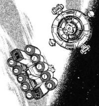

Inter Earth-Jupiter Customs Inter Earth-Jupiter Customs
5 Days from Jupiter Space Fortification Much smaller than either Jupiter Management HQ or the JDEG colection base, the Customs station lies at the edge of the Jovian sphere, used as a stopping point for the Jupiter Energy Fleets on their constant trips between the gas giant and the Earth Sphere. Large shuttles carry Helium 3 between the refinery in orbit and the customs station, and then carry goods brought back by the JEF to management HQ. The customs station has a light defense, but out in the deep reaches of the outer planets they get few visitors, if any. Inter Earth-Jupiter Customs  |